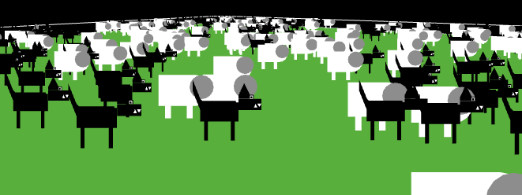

手册的本部分带你依次了解NetLogo界面的所有要素，并解释其功能。
在NetLogo里你可以查看模型库中的模型，增加东西，或创建你自己的模型。NetLogo界面设计用来满足所有需求。
界面分成两个主要部分：菜单和主窗口。主窗口分成标签页面。
在Macs，如果运行NetLogo应用程序，菜单条在屏幕顶部。在其他平台，菜单条在NetLogo窗口的顶部。
菜单条上的各菜单的功能如下表所列。
|
File | ||
|
|
New |
创建一个新模型 |
|
|
Open |
在计算机上打开任何一个模型 |
|
|
Models Library |
演示模型的集合 |
|
|
Save |
保存当前模型 |
|
|
Save As |
使用一个其他的名字保存当前模型 |
|
|
Save As Applet |
用来保存一个HTML格式的网页，其中以Java "applet"嵌入你的模型 |
|
|
|
将当前显示的页面内容发送到打印机 |
|
|
Export World |
保存所有变量、海龟和瓦片的当前状态、画图、绘图、输出区域和随机状态信息到一个文件 |
|
|
Export Plot |
将绘图中的数据保存到文件 |
|
|
Export All Plots |
将所有绘图中的数据保存到文件 |
|
|
Export View |
将当前视图(2D 或3D)作为图片保存到文件 (PNG 格式) |
|
|
Export Interface |
将当前界面页作为图片保存 ( PNG 格式 ) |
|
|
Export Output |
将输出区域的内容或命令中心的输出部分保存到文件 |
|
|
Import World |
加载用Export World保存的文件 |
|
|
Import Patch Colors |
将一个图像加载到瓦片，见 import-pcolors 命令 |
|
Import Patch Colors RGB |
使用RGB 颜色将一个图像加载到瓦片;见 import-pcolors-rgb 命令 | |
|
|
Import Drawing |
将一个图像加载到画图层，见 import-drawing 命令 |
|
|
Import HubNet Client Interface |
将其他模型的界面加载到HubNet Client Editor |
|
|
Quit |
退出NetLogo。 (在 Mac, 这一项在NetLogo菜单) |
|
Edit | ||
|
|
Undo |
撤销你上一次对文本的编辑 |
|
|
Redo |
恢复你上次撤销的编辑 |
|
|
Cut |
剪切或移除选中的文本，临时存到剪贴板 |
|
|
Copy |
复制选中的文本 |
|
|
Paste |
将剪贴板上的文本放到光标处 |
|
|
Delete |
删除选择的文本 |
|
|
Select All |
选择活动窗口中的所有文本 |
|
|
Find |
在信息页或例程页查找一个词或字符序列 |
|
|
Find Next |
查找下一处 |
|
|
Shift Left /
|
在例程页用于改变代码缩进层次 |
|
|
Comment /
|
在例程页使用,在代码中增加或移去分号(分号作为注释标志) |
|
Snap to Grid |
当激活时，新部件停在5个像素宽的网格上，这样容易对齐。（注意：当缩放时本功能失效） | |
|
Tools | ||
|
|
Halt |
停止所有代码的运行，包括按钮和命令中心。（警告：因为代码强制中断，如果继续运行时没有用"setup"重新启动模型，可能得到不期望的结果） |
|
|
Globals Monitor |
显示所有全局变量的值 |
|
|
Turtle Monitor |
显示特定海龟的所有变量值。也可编辑海龟变量的值，或向海龟发出命令。（也可以通过视图打开海龟监视器，见下面的视图部分） |
|
|
Patch Monitor |
显示特定瓦片的所有变量值。也可编辑瓦片变量的值，或向瓦片发出命令。（也可以通过视图打开瓦片监视器，见下面的视图部分） |
|
|
Link Monitor |
显示特定链的所有变量值。也可编辑链变量的值，或向链 发出命令。（也可以通过视图打开链监视器，见下面的视图部分） |
|
|
Close All Agent Monitors |
关闭所有主体监视器窗口 |
|
|
Hide/Show Command Center |
使命令中心可见或不可见。（注意命令中心也可以用鼠标实现显示、隐藏、改变大小） |
|
|
3D View |
打开3D视图。见下面的 视图 部分。 |
|
|
Color Swatches |
打开Color Swatches. 见编程指南的颜色部分 。 |
|
|
Turtle Shapes Editor |
画海龟图形。更多信息见 图形编辑器指南 。 |
|
Link Shapes Editor |
画链图形。更多信息见图形编辑器指南。 | |
|
|
BehaviorSpace |
使用不同的设置重复运行模型。更多信息见行为空间指南 。 |
|
|
System Dynamics Modeler |
打开系统动力学建模工具。更多信息见 系统动力学建模工具指南。 |
|
|
HubNet Client Editor |
打开HubNet Client Editor。更多信息见 HubNet编程指南 。 |
|
|
HubNet Control Center |
如果没有HubNet活动则不能用。更多信息见 HubNet指南 。 |
|
Zoom | ||
|
|
Larger |
增加模型的屏幕大小。在大的监视器或投影上有用。 |
|
|
Normal Size |
将模型的屏幕大小重设为正常大小 |
|
|
Smaller |
减小模型的屏幕大小 |
|
Tabs |
本菜单提供了每个页的快捷键 (Mac上是Command 1 到Command 3。在 Windows,是 Control 1到 Control 3.) | |
|
Help | ||
|
|
About NetLogo |
显示关于当前NetLogo的版本信息(在 Mac,该项在NetLogo菜单) |
|
|
Look Up In Dictionary |
对命令或报告器在浏览器中打开相应词典条目 |
|
|
NetLogo User Manual |
在浏览器中打开本手册 |
|
|
NetLogo Dictionary |
在浏览器中打开词典 |
|
|
NetLogo Users Group |
在浏览器中打开 NetLogo 用户群网站 |
|
|
Donate |
在浏览器中打开 NetLogo 捐赠网页 |
在NetLogo主窗口的顶部是三个标签页： "Interface(界面)", "Info(信息)" and "Code( 编码)" ，任一时刻只有其中之一可见，但可以通过单击窗口顶部的标签进行切换。
在这些标签下方是一个工具条，上面有一排按钮，当切换标签时会显示不同的按钮。
在界面页查看模型的运行，其中有工具用来监视和更改模型内部的运行情况。
当首次打开NetLogo时，界面页只有主视图和命令中心，主视图显示海龟和瓦片，命令中心用来发出NetLogo命令。
界面页的工具条包括按钮，按钮用来编辑、删除、创建界面项，还有一个菜单用来选择不同的界面项（例如按钮和滑动条）。
工具条上的按钮如下所述。
添加：要添加界面元素，首先在下拉菜单中选择所需元素，注意Add按钮呈按下状态，然后在工具条下方的空白区单击。（如果菜单项已经显示所需的类型，只需按下Add按钮，不用使用菜单）
选择：要选择一个界面元素，用鼠标拖出一个矩形包围它。该元素会出现灰色边框，表明被选中了。
选择多项： 通过用拖出的矩形同时包围多个界面元素，可以选中多项。如果选择了多项，其中一项是 "key" 项，含义是如果使用界面页工具条上的 "Edit" 或 "Delete"则只影响"key"项"key"项上是一个深灰色边框，以示区别。
取消选择： 要取消所选的所有元素，在界面页的空白处单击。要取消选择某个元素，Ctrl-单击（Macintosh）或右击（其他系统）该元素并在弹出菜单中选择 "Unselect" 。
编辑： 要改变一个界面元素的特性，选择该元素，按下界面页工具条的 "Edit" 按钮。也可以选择该元素后双击。 移动：选中界面元素，用鼠标将它拖到新位置。如果拖动时按下Shift键，则只能做水平会或垂直移动。
移动： 选中界面元素，用鼠标将它拖到新位置。如果拖动时按下Shift键，则只能做水平会或垂直移动。
改变大小： 选中界面元素，用鼠标拖动选择边框的黑色“手柄”。
删除： 选中要删除的一个或多个界面元素，然后按下界面工具条的"Delete" 按钮。也以通过Ctrl+单击（Macintosh）或右击（其他系统），然后在弹出菜单中选择"Delete"。如果使用后面这种方法，不必先选中元素。
要对各种界面元素有更多了解，参考下表。
| 图标 & 名字 | 描述 | ||
|---|---|---|---|
|
| 按钮可以是一次性的或永久性的。在一次性按钮上单击，将执行命令一次。永久性按钮则不断重复执行命令，直到再次按下按钮。如果为按钮分配了快捷键，则当按钮有焦点时，按下相应的键就等同于按下按钮。如果按钮有快捷键则在右上角显示快捷键字符。如果输入光标在另外的界面元素上，如命令中心，则按下快捷键不会触发按钮，这种情况下按钮右上角的字符会变暗。要激活快捷键，在界面页的空白背景上单击。 | ||
| 滑动条是全局变量，可以被所有主体访问。在模型中使用他们作为快速改变变量的方式，而不需重新编程的。相反，用户移动滑动条到一个值，观察模型发生的行为。 | |||
| 开关是true/false变量的可视化表示。通过拨动开关，用户设置变量为on (true) 或 off (false)。 | |||
|
| 用户使用选择器在选择列表中为一个全局变量选定值，选择列表显示为下拉菜单。 | ||
|
| 输入框是包含字符串或数值的全局变量。编程人员选择用户可以输入的变量类型。可以设置输入框对输入的命令或报告器字符串进行语法检查。数值型输入框可以读取任何形式的常值表达式，这比滑动条灵活的多。颜色输入框为用户提供了NetLogo颜色选择器。 | ||
| 监视器显示任何表达式的值。表达式可以是变量、复杂表达式，或对报告器的调用。监视器每秒自动更新几次。 | |||
| 绘图实时显示模型数据图形化。 | 输出区是一个文本卷滚区，用来记录模型活动。一个模型只能有一个输出区。 | ||
|
| 注释用来为界面页添加信息型文本标签。模型运行过程中注释内容不变。 |
界面页工具条上的其他控件用来控制视图更新和其他模型属性。
"Continuous" 更新是指NetLogo每秒更新（即重绘）视图很多次，不管模型运行的是什么。 "Tick-based" 更新是指只有滴答计算器推进时才更新视图。（关于视图更新的完整讨论，见 Programming Guide。）
界面页中的大块黑色区域是2D视图，它是NetLogo海龟和瓦片世界的可视化表示。初始时它是全黑的，因为瓦片是黑色的，还没有海龟。通过在视图控制条上单击"3D"按钮打开3D视图，这是世界的另外一个可视化表示。
左上角三组黑色箭头用来改变世界大小。当原点在世界中点时世界变化的最小增量是2，为最大值加1，为最小值减1。如果某条边为0，则世界的增量为1，在对面增加1，以保持原点在边上。如果原点在自定义的位置，则黑色箭头失效。
有很多与视图相关的设置。有几种改变设置的方式：使用视图顶端的控制条，或编辑2D视图，如上面的“使用界面元素”部分所讲，或按下工具条的"Settings..."按钮。
注意3D视图中的控制条组合了来自2D视图控制条的滴答计数器和界面工具条右部的控件。
下面是视图的设置（通过编辑视图，或按下界面工具条的"Settings..."按钮）。
注意设置分为三组，即world, view, ticks counter。World部分的设置影响海龟生存的世界的特性（改变他们后要对世界重设）。View 和tick counter部分仅影响表观，不会影响模型的输出。
World部分的设置用来定义世界的边界和拓扑。World面板左部的顶端用来选择世界原点的位置，有"Center", "Corner", "Edge","Custom"四种。默认世界原点是center型的，即（0,0）在中心位置，用户定义从中心到左右边界和上下边界的瓦片数。例如：如果设置Max-Pxcor = 10，则Min-Pxcor自动设为-10，则在瓦片patch 0 0的左侧有10个瓦片，在右侧有10个瓦片。
Corner型配置允许用户将原点定义到世界的一角，左上、右上、左下或右下。然后定义x和y方向的远端边界。例如将原点放在左下角，定义右和上（正）边界。
Edge型允许用户将原点放在一条边上（x或y），然后定义该方向的远端边界，及另一方向的两个边界。例如沿世界底部选择了edge模式，则必须定义顶边界和左右边界。
最后,Custom模式允许用户将原点放在世界的任何位置，但瓦片patch 0 0必须存在。
当改变设置时，面板右部的预览区反映出你的选择，显示原点和边界。世界的宽度和高度显示在预览区下方。
在预览区下方还有两个勾选框，是world wrap设置，用于控制世界的拓扑。注意当点
击勾选框时，预览区显示哪个方向是回绕的，拓扑的名字显示在世界尺寸的旁边。更多信息参见 的拓扑部分。
View部分的设置用来定制视图观感而不改变世界。改变view设置不会强迫世界重设。要改变2D视图的大小,调整"Patch Size"，单位是像素。这不会改变瓦片的数量，只改变2D视图瓦片显示的大小。（注意patch size不影响3D视图，因为只需让窗口变大就可以使3D视图变大 ）
font size 的设置让你控制海龟，瓦片和链接标签的的大小。
The frame rate 控制视图更新的频率。这对每个模型的默认速度有很大的作用。更多细节请看
.
"Smooth edges"仅出现在3D视图中，用来控制3D视图的反锯齿设置。使得直线看起来不太参差，但模型运行会慢一些。
Tick counter 部分的设置控制滴答计数器的显示，在视图控制条中出现与否。
在视图中容易调出turtle, patch，link监视器，只需在要查看的海龟或瓦片上Ctrl-单击(Macintosh)或右击（其他系统），并在弹出菜单中选择inspect turtle ..." 或"inspect patch ..."。通过在turtle子菜单中选择合适的选项，实现对海龟的观察、跟随和乘骑。（turtle, patch，link监视器也可在Tools菜单中打开，或使用inspect 命令）
有些模型让你在视图中通过鼠标点击或拖动实现与海龟或瓦片的交互。
在窗口的底部有一些按钮用来移动观察者或改变观察世界的视角。
当你调整这些设置时，在当前焦点出现一个蓝色十字。小蓝三角形总是指向正y轴方向，如果迷失方向时用它帮你确定方向。很容易!
要从不同的角度看世界，按下"rotate"按钮，单击后上、下、左、右拖动鼠标。观察者持续面向与以前一样的点（蓝十字所在处），但与xy-平面的关系变了。
要靠近或远离世界或正在观看、跟随或乘骑的主体，按下"zoom"按钮并上下拖动鼠标。（注意当在跟随或乘骑模式时，缩放将导致乘骑和跟随之间的切换，因为乘骑是跟随的一个特例，只是跟随距离为0）
如果不改变观察者的方向而改变它的位置，选择"move"按钮并保持鼠标按下，在3D视图中上下左右拖动鼠标。
要允许鼠标位置和状态传给模型，选择"interact"按钮，则它的功能就像鼠标在2D视图中一样。
要将观察者和焦点返回默认位置，按下"Reset Perspective"按钮（或使用 reset-perspective
命令）
全屏模式
要进入全屏模式，按下"Full Screen"按钮，要退出全屏模式，按下Esc键。
注意: 全屏模式在某些计算机上不能用，取决于所有的图形卡，见系统需求部分。 System Requirements
3D 图形
有些图形在3D视图中有3D对应物（3D圆实际是一个球），因此自动映射图形。
操纵3D视图

| 图形名称 | 3D 图形 |
| default | 3D turtle shape |
| circle | sphere |
| dot | small sphere |
| square | cube |
| triangle | cone |
| line | 3D line |
| cylinder | 3D cylinder |
| line-half | 3D line-half |
| car | 3D car |
所有其他图形解释为2D图形。如果图形可旋转，则假设是顶视图，像是从甜饼切割器中挤出的，与xy平面平行，就像Ants中那样。

如果图形不能旋转，则假设是侧视图，总是面对观察者画出（没有厚度），就像Wolf Sheep Predation中那样。

命令中心用来直接发出命令，而不需将这些命令加入模型的例程。（命令是给模型中的主体发出的指令）。这对运行时监视和操纵主体很有用。
(Tutorial #2: Commands 介绍如何在命令中心使用命令)
看看命令中心的设计。
大框下面的小框用来输入命令，输入后按下回车键运行命令。
在输入文本的左侧是一个弹出菜单，初始是"observer>"，可以在observer, turtles, patches之中选择，指定哪个主体运行你输入的命令。
提示：使用tab键快速切换observer, turtles, patches。
命令
如果你在命令中心输入命令， show 命令会自动被插到前面。
访问先前的命令
你输入的命令出现在命令行上方的滚转框中。可以用Edit菜单中的Copy命令拷贝该处的命令粘贴到其他地方，如例程页。
也可使用历史弹出菜单访问先前输入的命令，在输入命令框的右边有个小三角。单击这个小三角，出现弹出菜单，包含以前输入的命令，选择某项重用。
提示：可以使用键盘上的上下光标键更快速的访问先前的命令。
清除
单击右上角的"clear"，清除包含以前输入命令和输出的大滚转区。
要清除弹出式菜单上的历史命令，选择该菜单的"Clear History"。
安排
使用Tools菜单的Hide Command Center 和 Show Command Center，隐藏或显示命令中心。
要改变命令中心的大小，拖动分隔命令中心和模型界面的边界，或者单击边界左部的小箭头使得命令中心很大或完全隐藏。
要在垂直和水平布局之间切换，单击画有双端箭头的按钮，它就在"Clear"的左方。
如果在绘图的白色区域上移动鼠标，鼠标的x和y坐标会显示。（注意鼠标位置可能和数据点不是精确对应，如果想知道绘图点的精确坐标，使用Export Plot菜单项，在其他程序中查看输出文件）
当创建一个绘图时，就像其他小部件一样，编辑对话框自动出现。
上面许多域是自明的，如绘图的name, x和y轴的label，坐标范围和 "Show legend?"的选项框一样。
如果Auto Scale? 选中，，如果新增的点超出当前范围，则x，y自动调整。
在"Plot setup commands" and "Plot update commands" 下面，可以输入命令行，并在合适的时候自动运行。点击小三角来打开输入命令行的文本框。画图的命令在编程指南的画图部分有详细讲解。
在plot pens部分可以创建和定制不同的画笔，每个绘图至少有一个画笔。开始时有一个名为"default"的画笔，可以进行重命名，与模型的实际意义一致。
要改变画笔的颜色点击在画笔名字左边的颜色矩形。会出现一个对话框，可以设定基准颜色或者改变颜色。
要重命名画笔的名字，双击它。
在"Pen Update Commands" 列，当 reset-ticks, tick, 或
update-plots 运行的时候，你可以输入命令。这在编程指南的画图部分有详细的解释。
最后一列有两个按钮，点击铅笔的图形会打开一个可以新建画笔设置的窗口。垃圾桶的按钮可以删除画笔。
点击画笔的编辑按钮可以打开以下对话框：
reset-ticks 或
setup-plots 运行的时候运行的命令。
tick 或 update-plots
运行的时候运行的程序。这个区域在高级对话中重新出现，为编辑更长的命令提供空间。
查看更多细节请到编程指南的画图部分。
滑动条定义全局变量，用来方便的改变变量值。
。将滑动条放置到界面页时，自动出现编辑对话框，就像其他部件一样。多数域很熟悉，但要重点注意minimum, maximum 和 increment域可以接受任何报告器表达式，而不是只是常量。例如可以令minimum 为min-pxcor ，maximum为 max-pxcor 则当世界大小改变时，滑动条的边界自动调整。

主体监视器显示一个特定主体的所有变量和主体及其附近很小区域
你可以通过工具菜单打开主体监视器或者通过 inspect 命令。
你可以使用视图下面的滑动条来放大或缩小视图，利用 watch-me按钮在主视图中 watch 主体。
滑动条下方是每个主体的参数值。你可以输入一个新的值。就像运行了set pcolor ...代码一样。
主体变量区域下方是一个小的命令中心。和观察者运行代码中对所有的海龟、瓦片和链接起作用不同的是，这里的代码只适用于这个主体。
关闭主体监视器可以点击左上角的方框，或者按Esc键。如果同时按下shift键再点击那个方框，所有打开的主体监视器都会关闭，工具菜单中的"Close All Monitors"选项也能做到相同的效果。
编码标签页存储模型中的代码。包括只想在命令中心立即运行的代码和要保存下来以后还要用的代码。
检查代码是否有错误，可以按"Check"按钮。如果有语法错误，编码标签页就会变红，包含错误的代码会加高亮，错误信息也会出现。
切换标签页也会检查代码，因此如果你只是切换标签页，首先按Check按钮不是必要的。
要在程序中找到一段代码，可以在工具栏中点 "Find" 按钮，查找的对话框就会出现。
你可以查找词语或短语，也可以选择替换它们。 "Ignore case"选项框可以选择大小写是否相同。
如果"Wrap around" 选项框被勾选，整个编码标签页会从鼠标位置开始查找。当到最后的时候回回到开始，否则只有鼠标位置到最后被查找。 "Next"和"Previous"按钮会向前或者向后查找。
"Replace"替换当前短语， "Replace & Find" 替换当前短语并查找下一处。 "Replace All" 会替换所有查找到的短语。
使用在编码标签页中"Procedures"的菜单可以在代码中找到特定的程序定义。菜单的顺序按照字母表排列。
在编辑菜单中的"Shift Left", "Shift Right", "Comment", 和 "Uncomment"条目可以改变缩进多少，或者添加或移除标记段落的分隔号。
更多关于编写程序的信息，看Tutorial #3: Procedures 和Programming Guide。
注意： 这项功能是新增加的，正在试验阶段。
如果模型中加上 __includes 关键词，procedures菜单的右侧会出现includes菜单，列出本文件（.nlogo 或 .nls）包含的所有NetLogo源文件（.nls）
在该菜单的文件名上单击，会打开一个新页包含该文件，或者使用New Source File 和 Open Source File分别打开新文件或打开文件系统中已有的一个或多个文件。
一旦打开新页，就可以与其他页一样进行导航。可以通过Tabs菜单访问它们，也可使用键盘从一个页切换到另一个页（Mac上使用Command +数字，其他操作系统使用Control+数字）。
当Indent Automatically 选项框被勾选后，NetLogo会自动将代码按照逻辑结构的格式编排。例如，当你打开一组方括号 "["（也许在if 后），NetLogo会自动添加空格，使得接下来的一行代码比括号缩进两个空格。当输入另外一个括号的时候，会和第一个对齐。

NetLogo会尝试缩排你输入的代码，但是你可以在任意行按tab键，使Netlogo立刻缩排。或者你可以选择一整个代码区域，利用tab键重新缩排。
NetLogo一般情况下使用UTF-8 字符解码集保存和打开模型，它包含很大范围的国际字符。
如果你在美国英语之外的局部地区，一旦使用本地字符集出现问题，请及时联系我们。
Transition Guide 中有对于将更早版本的Netlogo中包含的国际字符集转换的建议。
大部分NetLogo的GUI和一些错误信息，现在都是国际化的，也就是说可能有几种不同语言的Netlogo版本。
我们说的几种语言是：英语，西班牙语，汉语和俄语。
在国际化上做的工作还不全面。我们正在向用户社区寻求帮助，将菜单和错误信息本地化。
默认情况下，如果支持的话，NetLogo使用用户操作系统的语言。如果操作系统时西班牙语，那么Netlogo也用西班牙语。当我们有了其他语言的翻译版本后，也能够实现。如果您的语言当前不被支持，那么Netlogo会使用英语。
当其他语言被添加后，一些英语用户可能会尝试一下。你可以改变操作系统的语言或者利用__change-language原语（只要把它输入到命令中心就可以）。会打开一个可以选择语言的对话框，当选择一个新语言之后，netlogo需要重新启动。当netlogo重新启动后，就会使用新语言了。这个选择会被记忆，下次打开仍然是这个语言。如果要改回来，再做一次上面的工作就行。
我们希望Netlogo能够翻译成更多的语言。如果您想要翻译成为您的语言，见 this wiki page